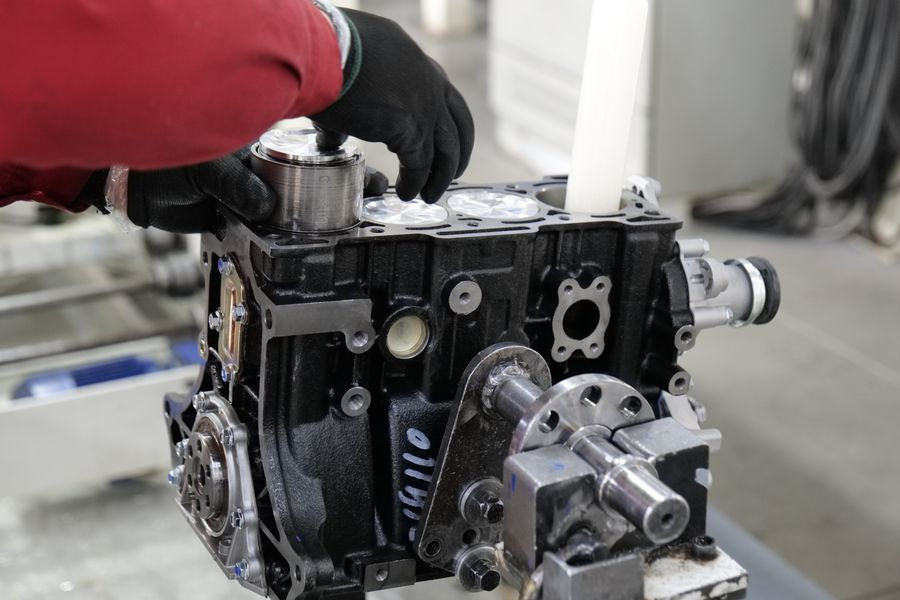

Europe's leading supplier of tested BMW engines — built on two decades of technical expertise.

Founded in Hamburg in 2003, Premium BMW Engines has grown from a specialist workshop into Europe's most comprehensive BMW engine supplier. Our 4,200 m² facility houses over 3,100 tested engines spanning every BMW generation from the classic M10 to the latest B58.
Every engine in our inventory undergoes a rigorous inspection protocol: compression testing, leak-down analysis, visual inspection of critical components, and dyno verification. We document every result and provide photographic evidence with each sale.
Our technical team includes certified BMW master technicians with collective experience exceeding 80 years. Whether you need a straightforward replacement for your daily driver or a performance engine for a track build, we provide the expertise to match the right powerplant to your project.
Contact Our TeamEvery engine dyno-tested with documented compression and leak-down results before sale.
No hidden fees. Published test results, clear warranty terms, and honest condition grading.
Shipping to 28 EU countries with full customs support, insurance, and tracking.